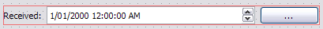
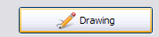

QGIS Data Collector - README
| Authors: | Nathan Woodrow
Damien Smith |
|---|---|
| Version: | 1.0 |
Contents
The QGIS Data Collector is a simple to use, simple to configure, data collection program built by Southern Downs Regional Council that uses QGIS. QGIS Data Collector is a QGIS Python plugin that removes most of the interface and replacing it with a simple to use interface for data collection.
As QGIS Data Collector is just a Python plugin you can use your normal QGIS project files (.qgs) in order to create mapping projects.
1 Zen
2 Requirements
- Latest QGIS Version > 1.8
- nose and mock (for Python tests)
- MS SQL Server 2008 (express or greater)
- .NET 3.5 (or greater)
- Microsoft Sync Framework
- Qt Designer (for form building)
- Something to install it on (some kind of fancy tablet PC)
3 Building
For building we use fabricate, a build tool written in pure Python, because frankly GNUMake is a pain to use, the syntax is just plain strange, and it sucks at error reporting.
To build just run make_win.bat from the main root folder. build.py will generate all the needed files and deploy them into the build directory.
The QGIS plugin location is  /SDRCDataCollection/app/python/plugins
/SDRCDataCollection/app/python/plugins
You can run build.py using Python with other arguments:
#Clean build files python build.py clean #Build only docs python build.py docs #Build only python build.py build
The version number used is {year}.{month}.{day}.{commitid} and inserted into metadata.txt. The version in metadata.txt is the version number for all the files and related binaries in the project; ignore all other version numbers.
4 Installing
Note
If you haven't done so already please read Building
Install the following software onto the client
- MS SQL Server 2008
- .NET 3.5
- Microsoft Sync Framework
- QGIS
Running the build.py file will compile and deploy the plugin to the list of clients.
python build.py
The list of clients can be found in the function deploy_to_clients() inside build.py. Edit this list to add/remove clients.
Note
The build script will run the unit tests. If any tests fail the build script will error and exit. This is to prevent deploying a version that breaks already working code.
5 Conventions
QGIS Data Collector follows a convention over configuration style in order to make setup consistant and easy. At times we may need to configure things but this will be kept to a minimum.
5.1 Form Conventions
Layer field names map to object names in Qt form (.ui)
The form binder searchs the form for a widget named the same as the field and will bind and unbind the value from the layer to the form. The widget type defines how the object is bound e.g. a column named MyColumn will bind to the QLineEdit::text() property of the widget with the same name.
Warning
There is very little error handling with the form binding. Binding a char column with the value "Hello World" to a QCheckBox might do strange things.
Date and time pickers can be created by placing a button on the form with the same name as the DateTimeEdit control but with the _pick added to the names end.
Layout of QDateTimeEdit and QPushButton

Note the name of the QDateTimeEdit and the QPushButton. The QPushButton can live anywhere on the form, the only constraint is that it uses the {name}_pick convention.
A correctly bound date time picker button has the word "Pick" and an icon.

Result of correct binding
- To correctly create a drawing pad button binding do the following:
- Create a field in the datebase
- Name a QPushButton with the field name - following the "fieldnames = object name" convention.
- Label the button with "Drawing"
Result of correct drawing button binding
Note
The image is stored on the filesystem not in the layer. So no value is ever stored in the database. See Program Conventions for details on image convention.
Adding a map picker button. A tool that can be used to select a feature from the map can be added by adding a QToolButton to the form with the object name as {name}_mapselect where {name} is the name of the control the result will be bound to.

Control with QToolButton with the same name.
In the above example the result of the map select will bind the result to the LotPlan control which is a QLineEdit.
Two custom properties also need to be added to the buttom in order to define where the picked value comes from.
The two properties are from_layer and using_column.

Custom properties on QToolButton
If any of the above properties are missing, or the layer supplied is not found, the map select button will be disabled.
Adding custom properties will be explained in Creating a new entry form
Adding mandatroy fields. Fields that are mandatory will be highlighted, and if not filled in, will stop the user from leaving the form.
To include a control as mandatory just add a "mandatory" bool custom property to the control that should be mandatory.

Custom property to set mandatory flag.
In order for the program to correctly handle highlighting the field as mandatory you also have to name the label for the control with {name}_label. When the edit control is marked as mandatory its label will be highlighted.

Adding custom properties will be explained in Creating a new entry form
5.1.1 Form Conventions Summary
- {control name} is {field name}
Maps field value to control.
- {control name}_label (Only QLabel)
Pairs label with control (for Mandatroy highlighting)
- {control name}_pick (Only QPushButton)
Open date and time picker and bind result value to the control with the name {control name}
- {control name}_mapselect (Only QToolButton)
Binds the result of a map select to the control with the name {control name}
5.2 Program Conventions
Images saved from drawing pad are stored in
data/{layername}/images.
Images have the following naming convention:{id}_{fieldname}.jpg
Example:
D896C1C0-9E4B-11E1-AB3F-002564CC69E0_Drawing.jpg
Temp images that are saved before commit have the following convention and are saved in the user temp directory:
drawingFor_{fieldname}.jpg
drawingFor_ is replaced with {id} when the record is commited into the layer. The image is then moved into the
data/{layer name}/images folder
where {layer name} is the name of the layer for the form.Projects are stored in the
projects/ directory. The name of the .qgs file will
be used in the open project dialog box. The project directory is not recursive
5.3 SQL Table Conventions
In order for MS SQL syncing to be correctly used the table must contain the following columns:
UniqueID as uniqueidentifier
Primary Key column must be Int
Tables must also be provisioned for syncing using the provision tool before syncing will work. More information can be found in Client Setup
6 Creating a new entry form
Creating a new form involves five items:
- A folder that holds the form (must start will 'form' e.g. formMyWaterForm)
- A form.ui file (The UI that is shown to the user)
- A settings.ini file
- __init__.py empty text file that is used to import the form.
- icon.png (optional toolbar icon)
A sample form, and files, can be found in entry_forms/_formSample
6.1 Save as template (once only)
Open Qt Designer and open the template form called template_motionf5v.ui stored in entry_forms/. Select File -> Save as Template... and save it as Motion F5V
6.2 Making a new entry form
Given a layer in QGIS which will need a custom form:

We are going to do the following in order to create a custom form:
- Create the __init__.py file
- Create a settings.ini file
- Create a new form in Qt Desinger and;
- Add a read only box for assetid
- Add a mandatory dropdown box for fittingtype
- Add a mandatory dropdown box for diameter
- Add a date time picker for dateinstalled
- Add a checkbox for replacedexisting
Create a new folder in entry_forms\ called formWaterFittings
Note
QGIS Data Collector uses a convention for detecting user forms and their folders. The folder must start with the word form.
Inside formWaterFittings folder create a empty text file called __init__.py and
settings.ini, and copy the icon.png from the _fromSample folder.
Copy the following information into settings.ini
form_name = Add water fitting
layer_name = WaterFittings
fullscreen=False
form_name is the name shown on the toolbar when adding a new map object; layer_name is the name of the layer the form is associated with, one layer can have many forms. Set fullscreen to True if you want the form to be shown in full screen mode.
The file structure should look like the following so far:
The form.ui file will be created in the next step.
Select File -> New.. and select Motion F5V from the user forms section

Select File -> Save and save it with the name form.ui into the new
formWaterFittings folder.
First drag and QLabel and QLineEdit onto the form for assetid and set the objectName property for the label to 'assetid_label' and the text property to something like "Asset ID". Set the objectName property of the QLineEdit to just 'assetid' and set the readonly to True.

Create a label and groupbox control for fittingtype and diameter. Name and label them both following the naming rules.
Right click, or press F2, on the fittingtype combobox and select Edit Items.... Fill in the list with values that will be used on the form. Always leave an empty entry at the top to allow the binder to handle an empty value selection.
Do the same for diameter

As fittingtype and diameter are mandatory we are going to add a custom property to both in order to say that they are. Hold Ctrl and select both the fittingtype and diameter combo box. Click on the green plus button the Property Edit panel and changing the Property Name to "mandatory" and the Property Type to Bool

Scoll to the bottom of the properties list and enable the mandatory flag

Adding the mandatory flag on the combo box will highlight the label that is assigned to the control using the {control name}_label convention.
Next we will add a QLabel, QDateTimeEdit, QPushButton, in order to add a date time picker. Name the QDateTimeEdit as dateinstalled, the QLabel as dateinstalled_label, and the QPushButton as dateinstalled_pick
Hold ctrl and select all three controls

and select the Horizonal Layout button on the toolbar. The controls will be aligned and grouped together. The red box highlights the controls as inside the one layout.

Ignore the text on the QPushButton as it will be replaced with a icon and the text Pick when the program runs.
Add a checkbox control onto the form changing its name to replacedexisting.
Important step
The last step is to add a QButtonBox that has a OK and Cancel button.
Warning
QGIS Data Collector expects there to be a QButtonBox on the form with the name buttonbox. The form will not work correctly and you will get errors if the button box is missing.
The form is also too big just for a few controls so resize it to a acceptable size. Select the main root item in the Object Inspector pannel and click grid layout.

Clicking the grid layout will auto size all the controls to fit the remaining space in the form. Depending on the needs of form this may or may not be a good idea.
Save the form.
7 Adding a project
Projects are stored as QGIS project files and live in the projects/ folder. When
the application is run the projects/ folder is scanned for .qgs files and they
are loading into the list of projects. Only the top level is scanned.
Adding a new project is simple.
- Create a new project in QGIS
- Add the layers that you need
- Save the project (.qgs) file into the
Entry Forms are matched on layer names, not file names, so if you can have a file called myWaterFittings.shp in order for QGIS Data Collector to match the form to the layer we can just name it in QGIS as WaterFittings wihtout changing the file name